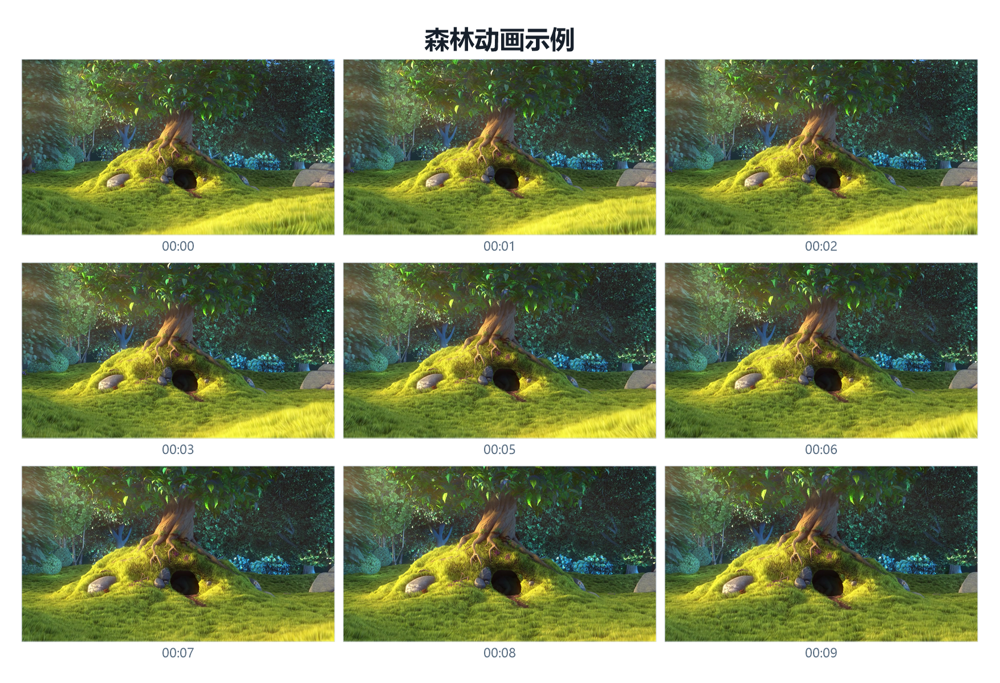

不登录、不上传，适合本地资料和长视频。
Windows 10 / 11 · Local Processing
本地工具套件
把批量文件改名和视频截图拼图收进两个原生 Windows 工具。 文件始终留在电脑本地，不经过浏览器上传。
- 2
- 款原生桌面软件
- 0
- 文件上传
- EXE
- Windows 直接运行
安装器、快捷方式和标准卸载流程完整。
支持文件夹、多文件和拖拽导入。
EXE、ZIP、PNG、JPG 与 PDF。
工作方式
输入、处理、输出都很直接
不需要学习复杂脚本，界面会先展示结果，再执行本地操作。
导入素材
拖入文件、选择多个文件，或者直接读取整个文件夹。
配置规则
设置命名模板、截图数量、播放器时间点、页面尺寸和标题。
批量执行
先预览结果，再改源文件、导出 ZIP，或批量生成图片和 PDF。
产品入口
每款软件都有独立介绍与下载入口
下载按钮位于每款软件介绍页顶部，便于快速获取安装文件。

对比项
文件改名台
视频截图拼图台
主要输入
任意文件与文件夹
MP4、MKV、HEVC 等视频
核心处理
模板命名与冲突处理
播放器选帧、等分取帧与拼图
主要输出
改名文件或 ZIP
PNG、JPG、分页 PDF
适合场景
素材归档、批量资料整理
教程预览、长视频总览、内容审核
下载中心
Windows 10 / 11 x64
所有程序均在本机运行。安装包中已包含所需运行组件。